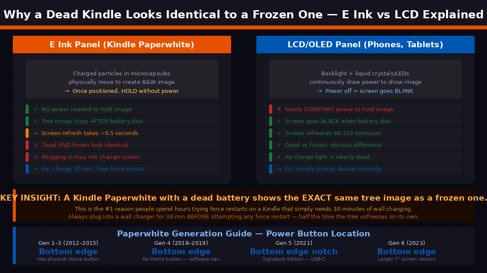
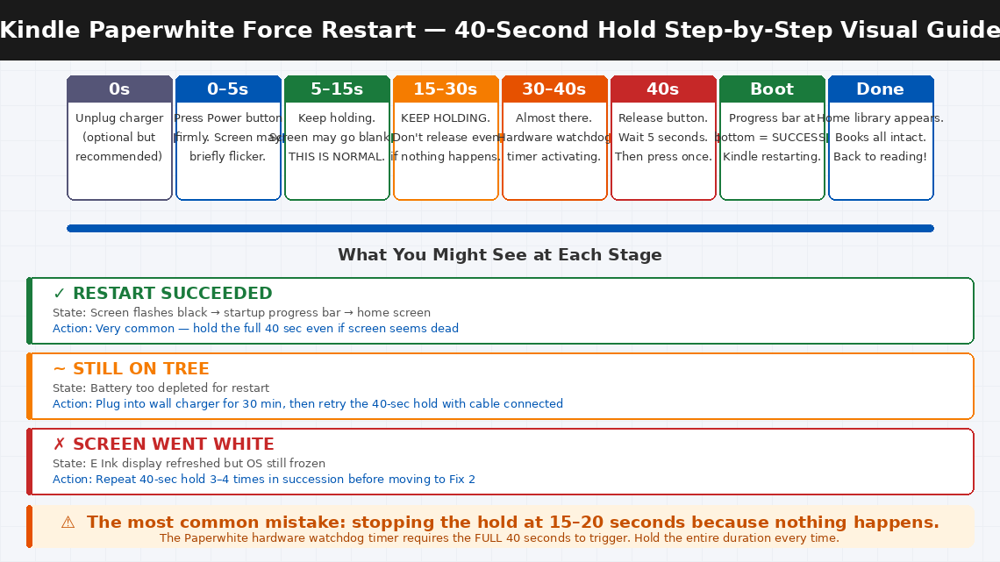
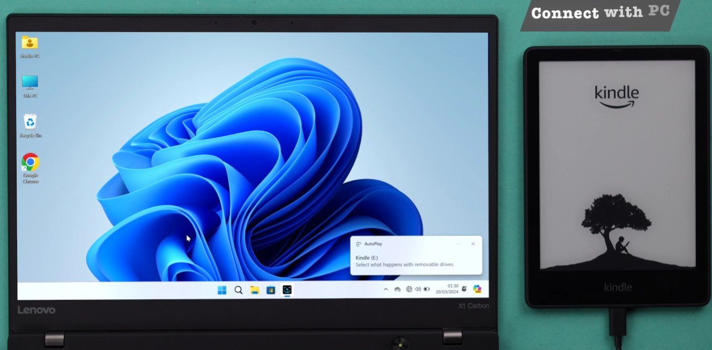
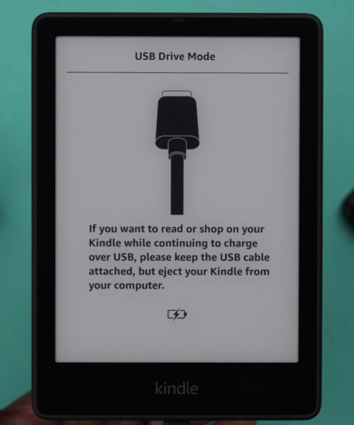

You’ve Been Staring at a Tree for Two Minutes.
There’s nothing more quietly frustrating than settling into bed with a good book, reaching for your Kindle Paperwhite — and finding it completely frozen on that minimalist tree image. The screen is on, the tree is there, but nothing responds. You tap the screen. Nothing. You press the power button. Still the tree. You press it longer. The tree stays.
You plug it in to charge. The charging light comes on but the tree is still frozen. You try holding the power button for ten seconds. Nothing. At this point, the Kindle feels less like a reading device and more like a very expensive bookmark.
Here’s what you need to know right away: the frozen tree screen on a Kindle Paperwhite is one of the most commonly reported Kindle issues — and it is almost never a sign of permanent damage. It is almost always a software freeze or a dead battery disguised as a freeze. The fix is a proper force restart — and once you know the exact technique for the Paperwhite’s hardware, it takes about forty-five seconds.
What Is the Tree Screen — and Why Does the Kindle Freeze on It?
The tree image on a Kindle Paperwhite is the device’s screensaver — the image it displays when it goes to sleep. Understanding what it actually is explains why the device freezes on it — and why the fix works the way it does.
E Ink displays work fundamentally differently from LCD or OLED screens. Rather than continuously refreshing pixels with electricity, E Ink uses charged particles that physically move to create black and white areas — and once positioned, those particles hold their position without any power at all. This is why Kindle batteries last weeks rather than hours.
The trade-off is that E Ink screen refreshes are slow and sequential. When the Paperwhite’s operating system crashes, freezes, or runs out of memory mid-operation, it can get stuck in a state where the last completed screen draw was the screensaver — the tree — and it cannot process commands to wake up or refresh. A completely dead Kindle shows this exact same tree image.
The four most common triggers:
- The battery completely discharged while displaying the screensaver — and didn’t properly reinitialise when power was restored. This is the most common cause. The tree image is preserved without power, so a dead Kindle looks identical to a frozen one.
- The Kindle ran out of memory — too many books in active memory, a background sync consuming resources, or a large sideloaded file causing a RAM-exhaustion crash.
- A firmware update was interrupted — by a low battery, a USB disconnection, or a storage error during the write process.
- A corrupted book file caused the reading application to crash, leaving the OS in an unstable state that cannot process screen refresh commands.

What You’ll Need
You need almost nothing for this fix:
- Your Kindle Paperwhite
- The original Amazon USB charging cable
- A wall charger (5V / 1A) — a standard phone charger works perfectly
- About 5–30 minutes depending on the fix needed
- No screwdrivers, no software, no computer required for most fixes
6 Force Restart Fixes
Work through these in order. The frozen tree screen is resolved at Fix 1 or Fix 2 for the overwhelming majority of Kindle Paperwhite users.
This is the definitive fix for a frozen Kindle Paperwhite. The reason it works better than a standard power button press is that it holds long enough to force the hardware watchdog timer to trigger a full processor reset, rather than just sending a software sleep command that the frozen OS ignores.
- Locate the Power button on your Paperwhite — it is on the bottom edge of the device on all Paperwhite generations.
- Press and hold the Power button for exactly 40 seconds. Do not release early — the 20-second hold that works on many devices is often not sufficient for a Paperwhite in a deep freeze state.
- Keep holding even if the screen appears to flicker or briefly flash. This is the E Ink display attempting a refresh cycle — it is a good sign.
- Release after 40 seconds.
- Wait 5 seconds, then press the Power button briefly once to start up.
- The Kindle should display the startup progress bar at the bottom of the screen, followed by the home library.

A Kindle that has completely discharged will display the tree screensaver indefinitely — the E Ink image requires no power to hold, so a dead Kindle looks identical to a frozen one. This is one of the most common misdiagnoses, and the fix is straightforward: charge first, then restart.
- Connect your Kindle to its charging cable and plug into a wall charger. Do not use a computer USB port for this step — computer USB ports often deliver insufficient current (500mA) to revive a deeply discharged battery. A wall charger rated at 1A or higher is significantly more reliable.
- Look for the charging indicator light — an amber or orange LED near the charging port. If this light appears, the battery is receiving charge. If no light appears at all, try a different cable and charger before concluding the port has a fault.
- Leave the Kindle charging for a minimum of 30 minutes without touching it. A deeply discharged lithium battery needs this trickle charge period before it has enough voltage to power the processor through a restart sequence.
- After 30 minutes, attempt the 40-second force restart from Fix 1 while the charging cable remains connected. Keeping the charger connected during the restart ensures the processor has consistent power throughout the sequence.
- If the Kindle restarts successfully, allow it to continue charging until the amber light turns green or white (indicating full charge) before unplugging.
On Paperwhite models that have a physical Home button (1st and 2nd generation models, released before 2015), there is an additional force restart method that sometimes succeeds when the single-button hold does not.
- Press and hold both the Power button and the Home button simultaneously.
- Hold both buttons together for 20 seconds.
- The screen will flash black — the full-panel E Ink refresh that signals a restart cycle is beginning.
- Release both buttons.
- Wait for the startup sequence to complete.
If your Paperwhite does not have a Home button (3rd generation and newer devices removed it), skip this step and proceed to Fix 4.
If the Paperwhite is not responding to any button sequence, connecting it to a computer sometimes triggers the device’s USB detection circuit — a lower-level hardware function that runs independently of the frozen OS — and this can interrupt the freeze state.
- Connect the Kindle to a computer via USB.
- Wait 30 seconds — the computer may attempt to recognise the device. You may hear the USB connection sound from the computer even if the Kindle’s screen doesn’t change.
- While the USB cable is connected, attempt the 40-second power button hold from Fix 1.
- If the computer recognises the Kindle as a storage device (it appears as a drive in File Explorer or Finder), the OS has partially recovered. Safely eject the device from the computer, unplug the USB, and attempt a normal restart.
- If recognised as a drive, you can also open the Kindle’s storage and delete any recently sideloaded files that may have caused the crash — look for any .mobi or .epub files added just before the freeze began.


If all button sequences have been attempted without success, a full battery drain can force the hardware into a true power-off state — eliminating whatever process is holding the frozen state — followed by a clean initialisation when power is restored.
- Leave the Kindle unplugged and undisturbed. Background processes (the frozen OS, the Wi-Fi chip, the processor) are consuming battery steadily even though the screen appears static.
- Leave it to discharge naturally for 24–48 hours.
- Alternatively, to accelerate discharge: hold the power button continuously for 40 seconds, release for 10 seconds, then hold again for 40 seconds. Repeat this cycle 5–6 times. Each hold attempt draws current from the battery.
- Once the battery is fully depleted (confirmed when no amber charging light appears when plugged in briefly), leave it connected to a wall charger for 45 minutes without touching it.
- After 45 minutes, attempt the 40-second force restart from Fix 1.
If the Kindle partially boots — reaching any screen beyond the frozen tree, even briefly — a factory reset wipes all locally stored books and settings but often resolves deep firmware corruption that causes persistent freeze states.
If the Kindle can reach the Settings menu:
- Navigate to Settings → Device Options → Reset (newer firmware) or Settings → Reset to Factory Defaults (older firmware).
- Confirm the reset and allow the process to complete — it takes approximately 5–10 minutes.
If the Kindle cannot reach the Settings menu:
- With the Kindle appearing fully frozen, hold the Power button for 40 seconds, then immediately (within 2 seconds of releasing) hold it again for 5 seconds.
- On some Paperwhite firmware versions, this double-hold sequence triggers a recovery mode — a minimal boot environment with a factory reset option.
- Alternatively, connect the Kindle to a computer, open its storage drive, and create an empty file named exactly
DO_FACTORY_RESTORE(no extension) in the root folder. Safely eject, unplug, and attempt a restart — the Kindle will detect this file on boot and run a deep factory recovery.
When to Contact Amazon Support
For a Kindle Paperwhite, “calling a professional” primarily means Amazon’s device support — since Kindles are sealed consumer devices with no user-serviceable parts and Amazon’s support is the most direct path to resolution.
- The device shows no response to any fix — no startup, no screen change, no charging light after trying multiple cables and chargers. The battery or charging circuit may have failed.
- The Kindle successfully restarts but freezes on the tree screen again within minutes. Repeated freeze cycles after successful restarts indicate firmware corruption or storage hardware failure requiring service-level repair.
- The charging port is physically damaged — loose, bent, or not accepting a cable securely. Charging port repair on a Kindle requires micro-soldering.
- The screen shows partial images, vertical lines, a grey wash, or pixel damage alongside the freeze. These symptoms indicate a display hardware failure.
- Your Kindle Paperwhite is within its warranty period. Amazon offers a 1-year limited warranty on Kindle devices. A device that freezes consistently under normal use is covered.
To reach Amazon Kindle support:
- India: amazon.in/devicesupport — Customer care: 1800-3000-9009 (toll-free)
- US: amazon.com/devicesupport — Phone: 1-888-280-4331
- Both portals offer live chat — often fastest, with typical response times under 5 minutes for Kindle hardware issues
- Amazon frequently offers discounted replacement Kindles to customers with hardware faults outside warranty — ask the support agent specifically about this before paying full price
Have your Kindle’s serial number ready — found in Settings → Device Options → Device Info, or on the label on the back of the device.
Quick Summary
| Fix | Difficulty | Time Needed |
|---|---|---|
| 40-second force restart (power button hold) | Very Easy | 1 minute |
| Charge for 30 minutes, then force restart | Very Easy | 30 minutes |
| Power + Home button combo (older models) | Very Easy | 1 minute |
| Connect via USB, then attempt force restart | Easy | 5 minutes |
| Full battery drain and recharge | Easy | 24–48 hrs (passive) |
| Factory reset via Settings or recovery menu | Moderate | 10 minutes |
Start with Fix 1 every single time. The 40-second hold — longer than most people attempt — resolves the frozen tree screen for the vast majority of Paperwhite users. The key detail most people miss is stopping at 20 or 30 seconds when the screen doesn’t immediately respond. Hold the full 40 seconds without releasing and the hardware watchdog timer does the rest.